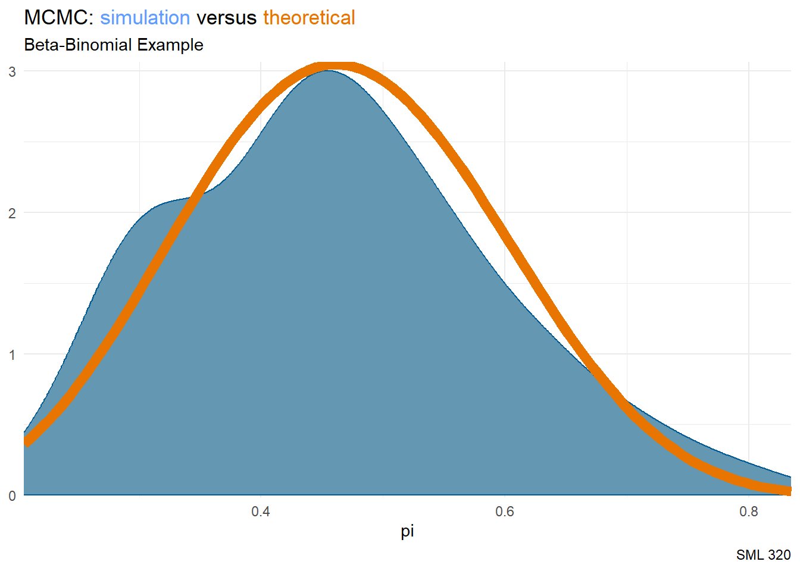

library("bayesplot")
library("ggtext")
library("rstan")
library("patchwork")
library("tidyverse")
knitr::opts_chunk$set(echo = TRUE)
# tips_df <- readr::read_csv("tips.csv")8: MCMC
A Good Example
# STEP 1: DEFINE the model
bb_model <- "
data {
int<lower = 0, upper = 9> Y;
}
parameters {
real<lower = 0, upper = 1> pi;
}
model {
Y ~ binomial(9, pi);
pi ~ beta(2, 2);
}
"start_time <- Sys.time()
# STEP 2: SIMULATE the posterior
good_simulation <- stan(model_code = bb_model, data = list(Y = 4),
chains = 4, iter = 5000*2, seed = 84735)
SAMPLING FOR MODEL 'anon_model' NOW (CHAIN 1).
Chain 1:
Chain 1: Gradient evaluation took 1e-05 seconds
Chain 1: 1000 transitions using 10 leapfrog steps per transition would take 0.1 seconds.
Chain 1: Adjust your expectations accordingly!
Chain 1:
Chain 1:
Chain 1: Iteration: 1 / 10000 [ 0%] (Warmup)
Chain 1: Iteration: 1000 / 10000 [ 10%] (Warmup)
Chain 1: Iteration: 2000 / 10000 [ 20%] (Warmup)
Chain 1: Iteration: 3000 / 10000 [ 30%] (Warmup)
Chain 1: Iteration: 4000 / 10000 [ 40%] (Warmup)
Chain 1: Iteration: 5000 / 10000 [ 50%] (Warmup)
Chain 1: Iteration: 5001 / 10000 [ 50%] (Sampling)
Chain 1: Iteration: 6000 / 10000 [ 60%] (Sampling)
Chain 1: Iteration: 7000 / 10000 [ 70%] (Sampling)
Chain 1: Iteration: 8000 / 10000 [ 80%] (Sampling)
Chain 1: Iteration: 9000 / 10000 [ 90%] (Sampling)
Chain 1: Iteration: 10000 / 10000 [100%] (Sampling)
Chain 1:
Chain 1: Elapsed Time: 0.032 seconds (Warm-up)
Chain 1: 0.032 seconds (Sampling)
Chain 1: 0.064 seconds (Total)
Chain 1:
SAMPLING FOR MODEL 'anon_model' NOW (CHAIN 2).
Chain 2:
Chain 2: Gradient evaluation took 1e-06 seconds
Chain 2: 1000 transitions using 10 leapfrog steps per transition would take 0.01 seconds.
Chain 2: Adjust your expectations accordingly!
Chain 2:
Chain 2:
Chain 2: Iteration: 1 / 10000 [ 0%] (Warmup)
Chain 2: Iteration: 1000 / 10000 [ 10%] (Warmup)
Chain 2: Iteration: 2000 / 10000 [ 20%] (Warmup)
Chain 2: Iteration: 3000 / 10000 [ 30%] (Warmup)
Chain 2: Iteration: 4000 / 10000 [ 40%] (Warmup)
Chain 2: Iteration: 5000 / 10000 [ 50%] (Warmup)
Chain 2: Iteration: 5001 / 10000 [ 50%] (Sampling)
Chain 2: Iteration: 6000 / 10000 [ 60%] (Sampling)
Chain 2: Iteration: 7000 / 10000 [ 70%] (Sampling)
Chain 2: Iteration: 8000 / 10000 [ 80%] (Sampling)
Chain 2: Iteration: 9000 / 10000 [ 90%] (Sampling)
Chain 2: Iteration: 10000 / 10000 [100%] (Sampling)
Chain 2:
Chain 2: Elapsed Time: 0.031 seconds (Warm-up)
Chain 2: 0.033 seconds (Sampling)
Chain 2: 0.064 seconds (Total)
Chain 2:
SAMPLING FOR MODEL 'anon_model' NOW (CHAIN 3).
Chain 3:
Chain 3: Gradient evaluation took 1e-06 seconds
Chain 3: 1000 transitions using 10 leapfrog steps per transition would take 0.01 seconds.
Chain 3: Adjust your expectations accordingly!
Chain 3:
Chain 3:
Chain 3: Iteration: 1 / 10000 [ 0%] (Warmup)
Chain 3: Iteration: 1000 / 10000 [ 10%] (Warmup)
Chain 3: Iteration: 2000 / 10000 [ 20%] (Warmup)
Chain 3: Iteration: 3000 / 10000 [ 30%] (Warmup)
Chain 3: Iteration: 4000 / 10000 [ 40%] (Warmup)
Chain 3: Iteration: 5000 / 10000 [ 50%] (Warmup)
Chain 3: Iteration: 5001 / 10000 [ 50%] (Sampling)
Chain 3: Iteration: 6000 / 10000 [ 60%] (Sampling)
Chain 3: Iteration: 7000 / 10000 [ 70%] (Sampling)
Chain 3: Iteration: 8000 / 10000 [ 80%] (Sampling)
Chain 3: Iteration: 9000 / 10000 [ 90%] (Sampling)
Chain 3: Iteration: 10000 / 10000 [100%] (Sampling)
Chain 3:
Chain 3: Elapsed Time: 0.03 seconds (Warm-up)
Chain 3: 0.032 seconds (Sampling)
Chain 3: 0.062 seconds (Total)
Chain 3:
SAMPLING FOR MODEL 'anon_model' NOW (CHAIN 4).
Chain 4:
Chain 4: Gradient evaluation took 1e-06 seconds
Chain 4: 1000 transitions using 10 leapfrog steps per transition would take 0.01 seconds.
Chain 4: Adjust your expectations accordingly!
Chain 4:
Chain 4:
Chain 4: Iteration: 1 / 10000 [ 0%] (Warmup)
Chain 4: Iteration: 1000 / 10000 [ 10%] (Warmup)
Chain 4: Iteration: 2000 / 10000 [ 20%] (Warmup)
Chain 4: Iteration: 3000 / 10000 [ 30%] (Warmup)
Chain 4: Iteration: 4000 / 10000 [ 40%] (Warmup)
Chain 4: Iteration: 5000 / 10000 [ 50%] (Warmup)
Chain 4: Iteration: 5001 / 10000 [ 50%] (Sampling)
Chain 4: Iteration: 6000 / 10000 [ 60%] (Sampling)
Chain 4: Iteration: 7000 / 10000 [ 70%] (Sampling)
Chain 4: Iteration: 8000 / 10000 [ 80%] (Sampling)
Chain 4: Iteration: 9000 / 10000 [ 90%] (Sampling)
Chain 4: Iteration: 10000 / 10000 [100%] (Sampling)
Chain 4:
Chain 4: Elapsed Time: 0.029 seconds (Warm-up)
Chain 4: 0.032 seconds (Sampling)
Chain 4: 0.061 seconds (Total)
Chain 4: end_time <- Sys.time()
print(round(end_time- start_time))Time difference of 54 secsbayesplot::mcmc_hist(good_simulation, pars = "pi")
bayesplot::mcmc_dens(good_simulation, pars = "pi") +
stat_function(fun = dbeta, args = list(7, 8),
color = "#E77500", linewidth = 3) +
labs(title = "MCMC: <span style='color:#619CFF'>simulation</span> versus <span style='color:#E77500'>theoretical</span>",
subtitle = "Beta-Binomial Example",
caption = "SML 320") +
theme_minimal() +
theme(plot.title = element_markdown())
bayesplot::mcmc_trace(good_simulation, pars = "pi") +
labs(title = "MCMC Trace",
subtitle = "Good Example",
caption = "SML 320") +
theme_minimal() +
theme(plot.title = element_markdown())
A Bad Example
# STEP 1: DEFINE the model
bb_model <- "
data {
int<lower = 0, upper = 9> Y;
}
parameters {
real<lower = 0, upper = 1> pi;
}
model {
Y ~ binomial(9, pi);
pi ~ beta(2, 2);
}
"start_time <- Sys.time()
# STEP 2: SIMULATE the posterior
bad_simulation <- stan(model_code = bb_model, data = list(Y = 4),
chains = 4, iter = 50*2, seed = 84735)
SAMPLING FOR MODEL 'anon_model' NOW (CHAIN 1).
Chain 1:
Chain 1: Gradient evaluation took 3e-06 seconds
Chain 1: 1000 transitions using 10 leapfrog steps per transition would take 0.03 seconds.
Chain 1: Adjust your expectations accordingly!
Chain 1:
Chain 1:
Chain 1: WARNING: There aren't enough warmup iterations to fit the
Chain 1: three stages of adaptation as currently configured.
Chain 1: Reducing each adaptation stage to 15%/75%/10% of
Chain 1: the given number of warmup iterations:
Chain 1: init_buffer = 7
Chain 1: adapt_window = 38
Chain 1: term_buffer = 5
Chain 1:
Chain 1: Iteration: 1 / 100 [ 1%] (Warmup)
Chain 1: Iteration: 10 / 100 [ 10%] (Warmup)
Chain 1: Iteration: 20 / 100 [ 20%] (Warmup)
Chain 1: Iteration: 30 / 100 [ 30%] (Warmup)
Chain 1: Iteration: 40 / 100 [ 40%] (Warmup)
Chain 1: Iteration: 50 / 100 [ 50%] (Warmup)
Chain 1: Iteration: 51 / 100 [ 51%] (Sampling)
Chain 1: Iteration: 60 / 100 [ 60%] (Sampling)
Chain 1: Iteration: 70 / 100 [ 70%] (Sampling)
Chain 1: Iteration: 80 / 100 [ 80%] (Sampling)
Chain 1: Iteration: 90 / 100 [ 90%] (Sampling)
Chain 1: Iteration: 100 / 100 [100%] (Sampling)
Chain 1:
Chain 1: Elapsed Time: 0 seconds (Warm-up)
Chain 1: 0 seconds (Sampling)
Chain 1: 0 seconds (Total)
Chain 1:
SAMPLING FOR MODEL 'anon_model' NOW (CHAIN 2).
Chain 2:
Chain 2: Gradient evaluation took 1e-06 seconds
Chain 2: 1000 transitions using 10 leapfrog steps per transition would take 0.01 seconds.
Chain 2: Adjust your expectations accordingly!
Chain 2:
Chain 2:
Chain 2: WARNING: There aren't enough warmup iterations to fit the
Chain 2: three stages of adaptation as currently configured.
Chain 2: Reducing each adaptation stage to 15%/75%/10% of
Chain 2: the given number of warmup iterations:
Chain 2: init_buffer = 7
Chain 2: adapt_window = 38
Chain 2: term_buffer = 5
Chain 2:
Chain 2: Iteration: 1 / 100 [ 1%] (Warmup)
Chain 2: Iteration: 10 / 100 [ 10%] (Warmup)
Chain 2: Iteration: 20 / 100 [ 20%] (Warmup)
Chain 2: Iteration: 30 / 100 [ 30%] (Warmup)
Chain 2: Iteration: 40 / 100 [ 40%] (Warmup)
Chain 2: Iteration: 50 / 100 [ 50%] (Warmup)
Chain 2: Iteration: 51 / 100 [ 51%] (Sampling)
Chain 2: Iteration: 60 / 100 [ 60%] (Sampling)
Chain 2: Iteration: 70 / 100 [ 70%] (Sampling)
Chain 2: Iteration: 80 / 100 [ 80%] (Sampling)
Chain 2: Iteration: 90 / 100 [ 90%] (Sampling)
Chain 2: Iteration: 100 / 100 [100%] (Sampling)
Chain 2:
Chain 2: Elapsed Time: 0 seconds (Warm-up)
Chain 2: 0 seconds (Sampling)
Chain 2: 0 seconds (Total)
Chain 2:
SAMPLING FOR MODEL 'anon_model' NOW (CHAIN 3).
Chain 3:
Chain 3: Gradient evaluation took 1e-06 seconds
Chain 3: 1000 transitions using 10 leapfrog steps per transition would take 0.01 seconds.
Chain 3: Adjust your expectations accordingly!
Chain 3:
Chain 3:
Chain 3: WARNING: There aren't enough warmup iterations to fit the
Chain 3: three stages of adaptation as currently configured.
Chain 3: Reducing each adaptation stage to 15%/75%/10% of
Chain 3: the given number of warmup iterations:
Chain 3: init_buffer = 7
Chain 3: adapt_window = 38
Chain 3: term_buffer = 5
Chain 3:
Chain 3: Iteration: 1 / 100 [ 1%] (Warmup)
Chain 3: Iteration: 10 / 100 [ 10%] (Warmup)
Chain 3: Iteration: 20 / 100 [ 20%] (Warmup)
Chain 3: Iteration: 30 / 100 [ 30%] (Warmup)
Chain 3: Iteration: 40 / 100 [ 40%] (Warmup)
Chain 3: Iteration: 50 / 100 [ 50%] (Warmup)
Chain 3: Iteration: 51 / 100 [ 51%] (Sampling)
Chain 3: Iteration: 60 / 100 [ 60%] (Sampling)
Chain 3: Iteration: 70 / 100 [ 70%] (Sampling)
Chain 3: Iteration: 80 / 100 [ 80%] (Sampling)
Chain 3: Iteration: 90 / 100 [ 90%] (Sampling)
Chain 3: Iteration: 100 / 100 [100%] (Sampling)
Chain 3:
Chain 3: Elapsed Time: 0 seconds (Warm-up)
Chain 3: 0 seconds (Sampling)
Chain 3: 0 seconds (Total)
Chain 3:
SAMPLING FOR MODEL 'anon_model' NOW (CHAIN 4).
Chain 4:
Chain 4: Gradient evaluation took 1e-06 seconds
Chain 4: 1000 transitions using 10 leapfrog steps per transition would take 0.01 seconds.
Chain 4: Adjust your expectations accordingly!
Chain 4:
Chain 4:
Chain 4: WARNING: There aren't enough warmup iterations to fit the
Chain 4: three stages of adaptation as currently configured.
Chain 4: Reducing each adaptation stage to 15%/75%/10% of
Chain 4: the given number of warmup iterations:
Chain 4: init_buffer = 7
Chain 4: adapt_window = 38
Chain 4: term_buffer = 5
Chain 4:
Chain 4: Iteration: 1 / 100 [ 1%] (Warmup)
Chain 4: Iteration: 10 / 100 [ 10%] (Warmup)
Chain 4: Iteration: 20 / 100 [ 20%] (Warmup)
Chain 4: Iteration: 30 / 100 [ 30%] (Warmup)
Chain 4: Iteration: 40 / 100 [ 40%] (Warmup)
Chain 4: Iteration: 50 / 100 [ 50%] (Warmup)
Chain 4: Iteration: 51 / 100 [ 51%] (Sampling)
Chain 4: Iteration: 60 / 100 [ 60%] (Sampling)
Chain 4: Iteration: 70 / 100 [ 70%] (Sampling)
Chain 4: Iteration: 80 / 100 [ 80%] (Sampling)
Chain 4: Iteration: 90 / 100 [ 90%] (Sampling)
Chain 4: Iteration: 100 / 100 [100%] (Sampling)
Chain 4:
Chain 4: Elapsed Time: 0 seconds (Warm-up)
Chain 4: 0 seconds (Sampling)
Chain 4: 0 seconds (Total)
Chain 4: end_time <- Sys.time()
print(round(end_time- start_time))Time difference of 0 secsbayesplot::mcmc_hist(bad_simulation, pars = "pi")
bayesplot::mcmc_dens(bad_simulation, pars = "pi") +
stat_function(fun = dbeta, args = list(7, 8),
color = "#E77500", linewidth = 3) +
labs(title = "MCMC: <span style='color:#619CFF'>simulation</span> versus <span style='color:#E77500'>theoretical</span>",
subtitle = "Beta-Binomial Example",
caption = "SML 320") +
theme_minimal() +
theme(plot.title = element_markdown())
bayesplot::mcmc_trace(bad_simulation, pars = "pi") +
labs(title = "MCMC Trace",
subtitle = "Bad Example",
caption = "SML 320") +
theme_minimal() +
theme(plot.title = element_markdown())
Metropolis Algorithm
With a symmetric proposal model
\[q(\mu^{′}|\mu) = q(\mu|\mu^{′})\]
the probability of accepting a move from a current location \(\mu\) to a proposed location \(\mu^{′}\) comes down to a comparison of their posterior plausibility: \(f(\mu^{'}|y)\) versus \(f(\mu|y)\). There are two possible scenarios here:
- Scenario 1: \(f(\mu^{'}|y) \geq f(\mu|y)\). When the posterior plausibility of \(\mu^{′}\) is at least as great as that of \(\mu\), \(\alpha=1\). Thus, we’ll definitely move there.
- Scenario 2: \(f(\mu^{'}|y) < f(\mu|y)\). If the posterior plausibility of \(\mu^{′}\) is less than that of \(\mu\), then
\[α=\displaystyle\frac{f(\mu^{′}|y)}{f(\mu|y)}<1\]
Thus, we might move there.
Gibbs Sampling
When Hastings generalized the Metropolis Algorithm, the need for a symmetric proposal model was removed.
Step 1: Propose a new location. Conditioned on the current location \(\mu\), draw a location \(\mu^{′}\) from a proposal model with pdf \(q(\mu^{′}|\mu)\).
Step 2: Decide whether or not to go there.
- Calculate the acceptance probability (i.e., the probability of accepting the proposal \(\mu^{′}\)): \[\alpha = \text{min}\left\{1, \displaystyle\frac{f(\mu^{′}) \cdot L(\mu^{′}|y)}{f(\mu) \cdot L(\mu|y)} \cdot \displaystyle\frac{q(\mu^{′}|\mu)}{q(\mu|\mu^{′})} \right\}\]
- Figuratively, flip a weighted coin. If it’s Heads, with probability \(\alpha\), go to the proposed location \(\mu^{′}\). If it’s Tails, with probability \(1−\alpha\), stay at \(\mu\): \[\mu^{(i+1)} = \begin{cases} \mu^{'} & \text{with probability } \alpha \\ \mu & \text{with probability } 1-\alpha \\ \end{cases}\] :::
Hamiltonian Monte Carlo
Footnotes
Session Info
sessionInfo()R version 4.3.1 (2023-06-16 ucrt)
Platform: x86_64-w64-mingw32/x64 (64-bit)
Running under: Windows 10 x64 (build 19045)
Matrix products: default
locale:
[1] LC_COLLATE=English_United States.utf8
[2] LC_CTYPE=English_United States.utf8
[3] LC_MONETARY=English_United States.utf8
[4] LC_NUMERIC=C
[5] LC_TIME=English_United States.utf8
time zone: America/New_York
tzcode source: internal
attached base packages:
[1] stats graphics grDevices utils datasets methods base
other attached packages:
[1] lubridate_1.9.2 forcats_1.0.0 stringr_1.5.0 dplyr_1.1.2
[5] purrr_1.0.1 readr_2.1.4 tidyr_1.3.0 tibble_3.2.1
[9] ggplot2_3.4.2 tidyverse_2.0.0 patchwork_1.1.2 rstan_2.32.5
[13] StanHeaders_2.32.5 ggtext_0.1.2 bayesplot_1.11.0
loaded via a namespace (and not attached):
[1] tensorA_0.36.2.1 gtable_0.3.3 xfun_0.39
[4] QuickJSR_1.1.3 htmlwidgets_1.6.2 inline_0.3.19
[7] tzdb_0.4.0 vctrs_0.6.3 tools_4.3.1
[10] generics_0.1.3 stats4_4.3.1 curl_5.0.1
[13] parallel_4.3.1 fansi_1.0.4 pkgconfig_2.0.3
[16] checkmate_2.3.1 distributional_0.3.2 RcppParallel_5.1.7
[19] lifecycle_1.0.3 compiler_4.3.1 farver_2.1.1
[22] munsell_0.5.0 codetools_0.2-19 htmltools_0.5.5
[25] yaml_2.3.7 pillar_1.9.0 abind_1.4-5
[28] posterior_1.5.0 commonmark_1.9.0 tidyselect_1.2.0
[31] digest_0.6.34 stringi_1.7.12 reshape2_1.4.4
[34] labeling_0.4.2 fastmap_1.1.1 grid_4.3.1
[37] colorspace_2.1-0 cli_3.6.1 magrittr_2.0.3
[40] loo_2.6.0 pkgbuild_1.4.3 utf8_1.2.3
[43] withr_2.5.0 scales_1.2.1 backports_1.4.1
[46] timechange_0.2.0 rmarkdown_2.23 matrixStats_1.2.0
[49] gridExtra_2.3 hms_1.1.3 evaluate_0.21
[52] knitr_1.43 V8_4.3.2 markdown_1.7
[55] rlang_1.1.1 gridtext_0.1.5 Rcpp_1.0.11
[58] glue_1.6.2 xml2_1.3.4 rstudioapi_0.15.0
[61] jsonlite_1.8.8 plyr_1.8.8 R6_2.5.1